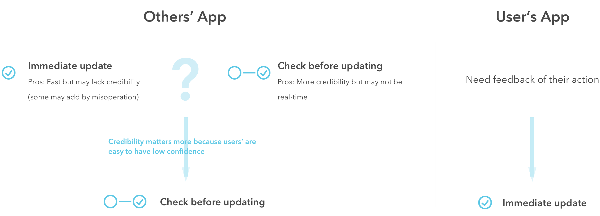
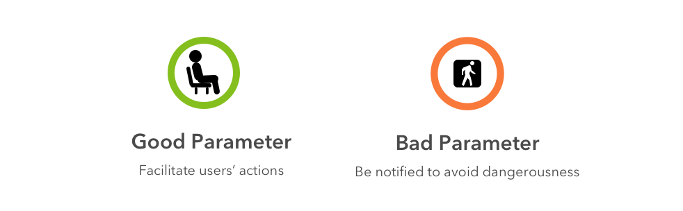
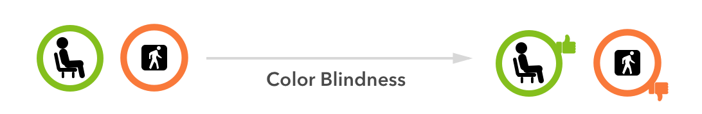
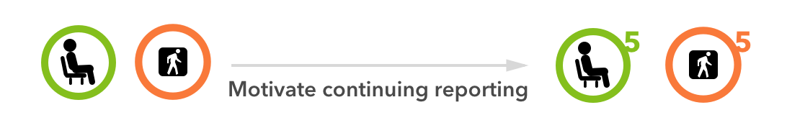
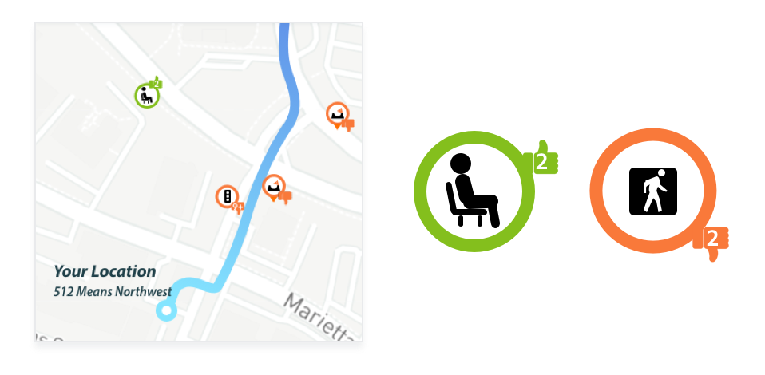
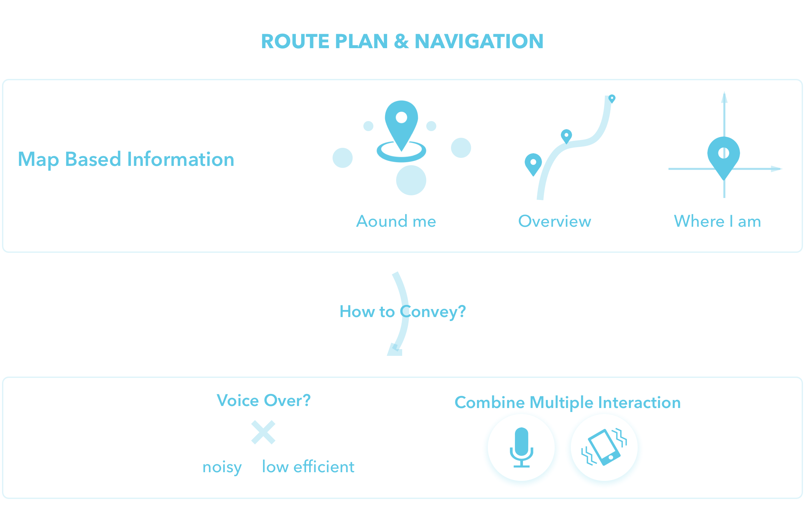

OVERVIEW
ALIGN is the user-friendly route planning and navigation tool with special features that aid older adults and people with mobility or visual impairments. Pick your starting point, destination, and route conditions you care about, and ALIGN will generate a route that best suits your preference. The app will also notify you of upcoming route conditions during the turn by turn navigation.
My Role
This is an ongoing project. Last year, I led iOS development and finally submitted version 1.0 to App Store in May 2018. For this semester, I just finished designing version 2.0 which focused on crowdsourcing, and working on version 3.0 right now focusing on non-visual UI.
Why route condition is crucial?
For people with different abilities, there are some route conditions especially matter to them. Knowing these route conditions in advance may affect whether they choose this route or not. Also, notify them during navigation can be a great relief. Like people with visual impairments, too much noise or huge pedestrian traffic will be hard for them to navigate. While it’s reassuring for them to know the existence of auditory walking signal or benches in advance. Besides, like people with mobility impairments, curb cut may affect whether they choose this route or not.

How to generate and use route condition?
For Version 1.0, we use machine learning to recognize route conditions in Google Map’s street view. And then according to users’ preference, incorporating route conditions in route planning and navigation.
CROWDSOURCING
Why we need crowdsourcing?
Crowdsourcing can solve the limitation of machine learning(visual-based)
For version 1.0, we got environmental parameters using machine learning algorithm from Google Map’s street view. But those are through image recognition and visual based, which are inaccessible for people with visual lost. That’s why crowdsourcing is needed in recognizing of not visual based environmental parameters.
Crowdsourcing can increase more credibility due to the accuracy of machine learning
Even for visual based parameters, as more people join, more information app will have, more precise the app will be. Crowdsourcing can increase more credibility and improve the accuracy of machine learning algorithm.

COMPETITIVE ANALYSIS
We conducted competitive analysis for crowdsourcing navigation app. Among these, wheelmap and Waze stands out:

INFORMATION ARCHITECTURE
Challenge: Parameter categories generated by machine learning is a lot and hard for users to choose, does all parameters need crowdsourcing?
Some environmental parameters like ‘business density’, ‘safe traffic history’ are hard to get from users’ side. And also some categorizations are too complex. That’s why we started to prioritize and I drew the following mindmap including parameters that were most suitable for crowdsourcing:

DESIGN CONSIDERATION
Consideration 1: Credibility
How to balance the credibility in crowdsourcing? Will newly added parameters immediately show on others’ app?
If yes, will it lead to low credibility? If all newly added parameters will update the system immediately, and some of it may be added by mistake, does it will greatly affect others and lower the credibility of the provided information?
If no, will users lack feedback about their action? After users add a new parameter, they expect to see the result of their action.
Decision 1
For users’ app, they will get update parameters once they add a new one. But for others, check it first before updating. At the beginning when dataset is small, credibility matters more because each one may affect a lot. So manually check before updating. As user number grows, we can have automatically updates such as when three people add same parameters.
Consideration 2: Parameter Icon Design
We use red / green to differentiate bad / good parameters. (Good means amenities that can facilitate users’ actions. Bad means parameters that users should be notified to avoid dangerousness)
But for people with color blindness who cannot distinguish red and green, how can they recognize it?
Solution: Use extra thumb-up & thumb-down to indicate good & bad parameters.
Quality of crowdsourcing is quantity based. More people join, more credibility the result could be. So how to motivate people to continue reporting?
Solution: For each parameter on the map, add the number of people who has been verified.
How to combine these?
FINAL DESIGN

Verify Current Parameters
——
Users can verify or add a comment for the existing parameters. Other users can see how many people verified or made comment to get more credibility.

Report New Parameters
——
Users can report the environmental parameters together. They can also upload image or write a comment for a new parameter.
USER FLOW


NON-VISUAL UI
INTRODUCTION
My Contribution
We're at the intial stage of Version 3.0. Right now we just finished literature review and competitive analysis. I drew task analysis to emphasize pain points and design consideration at each stage. Our next step is to brainstorm.
Problem Space
How to provide same info and make it accessible for people with visual impairments? Especially under navigation circumstance, how to convey map based information to help them plan the route and aware of potential danger in advance? Most app will involve voice over. But the constraint is that environment is noisy and also map based info is hard to conveyed efficiently.
Solution
Combine multiple modalities including voice interaction or haptic feedback that can meet all users’ needs and convey map based information(where I am, what’s around me, navigation notification) efficiently to create a customized navigational experience regardless of ability.
